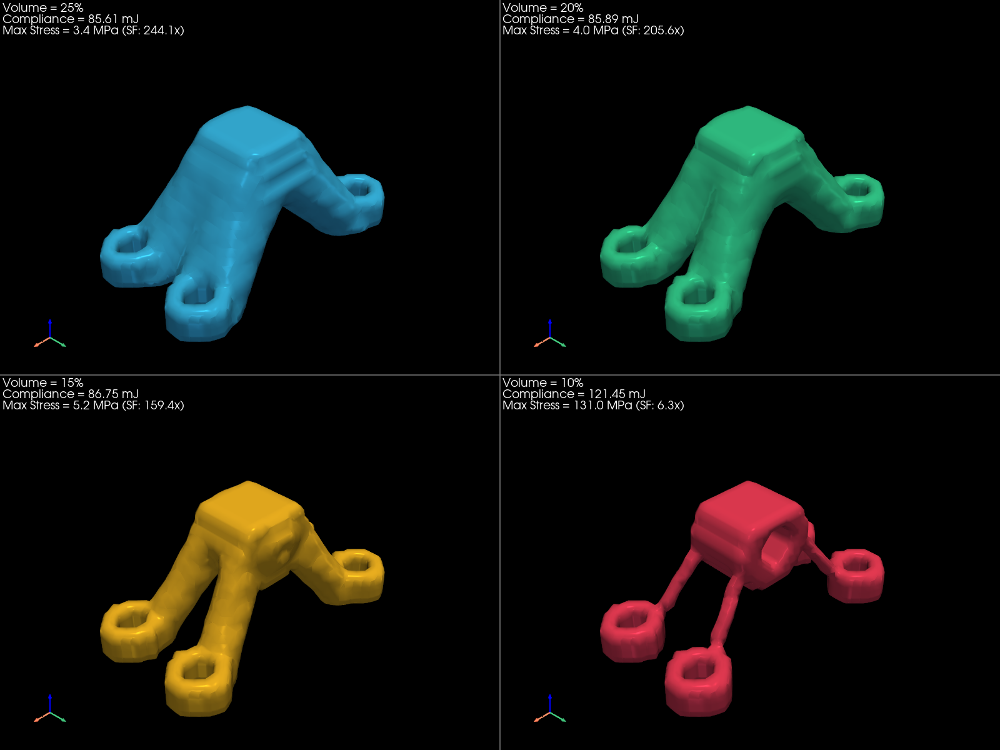
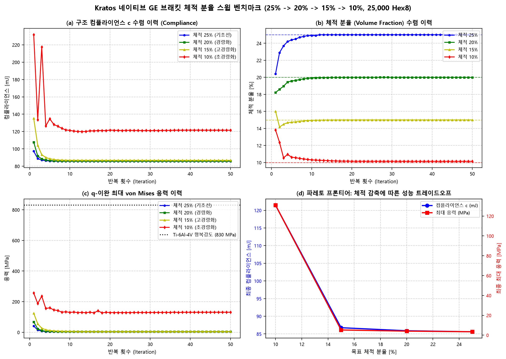
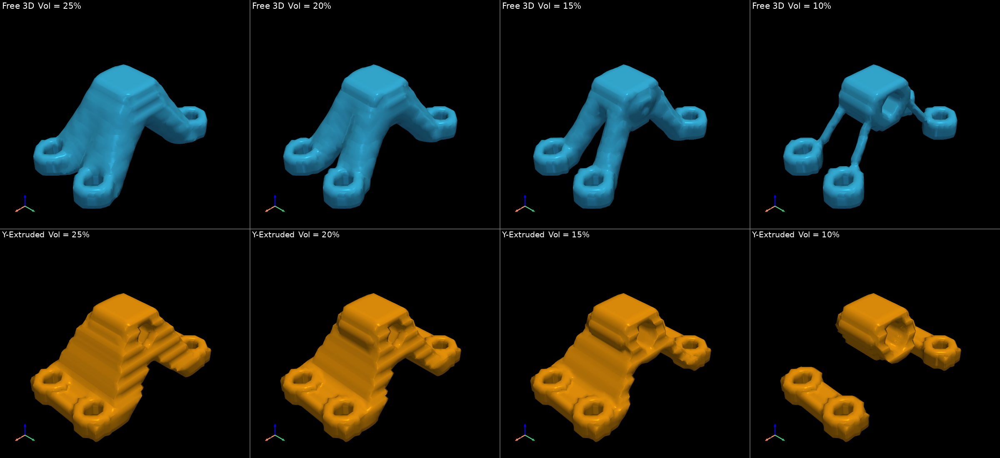
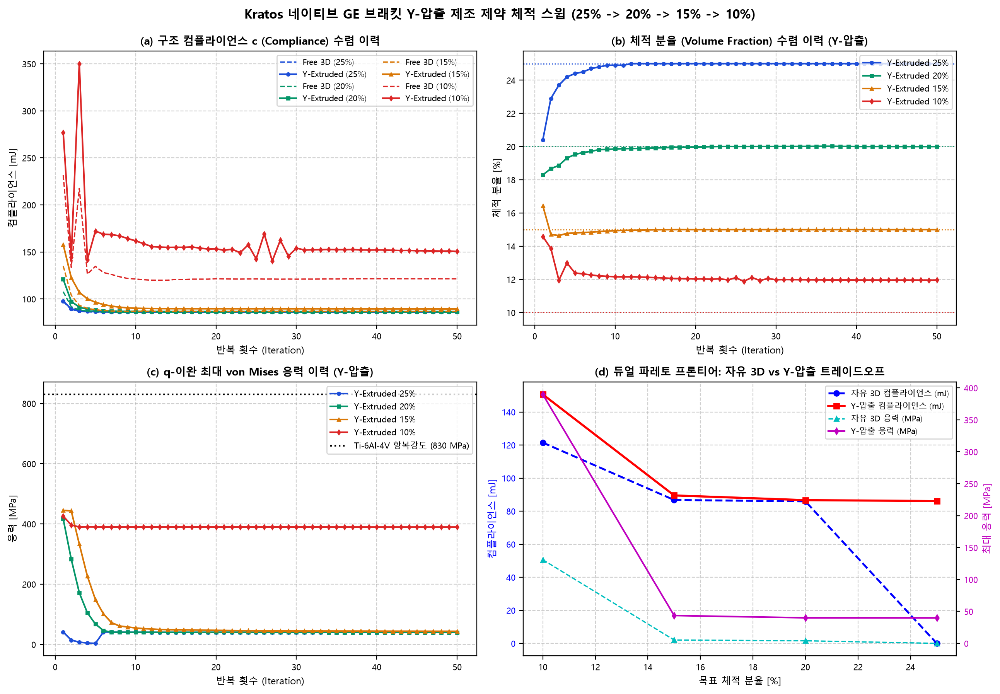
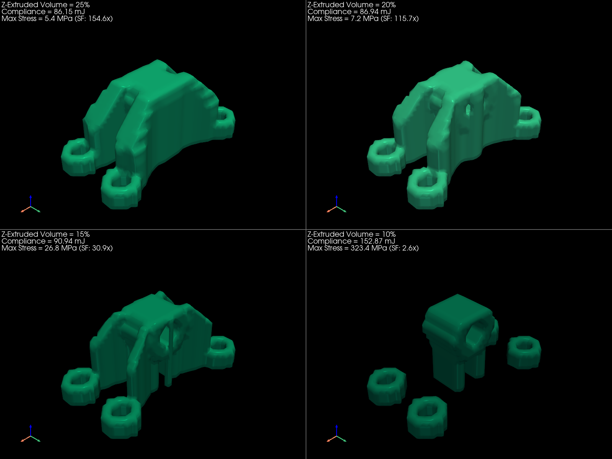
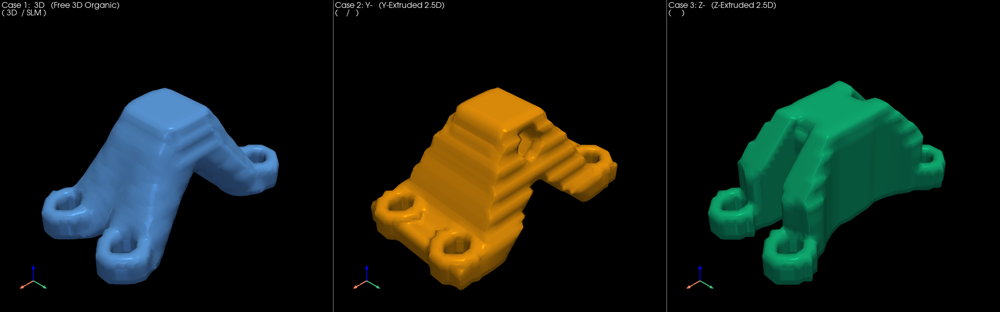
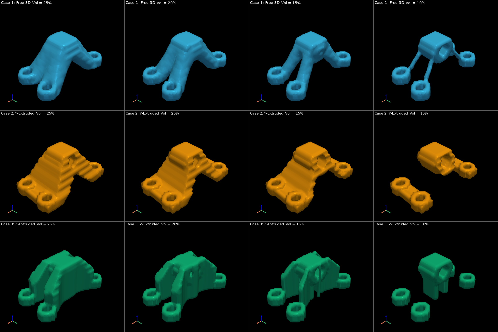
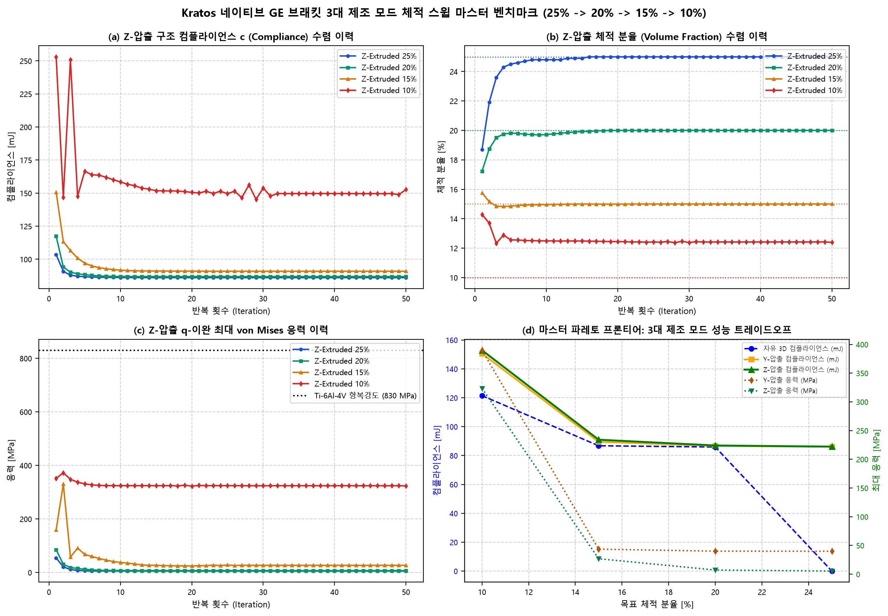

제조 제약이 없는 상태에서 이상적인 3차원 하중 전달 경로를 형성한 기준 모델입니다. 체적을 25%에서 10%까지 감축하며 위상 전이 거동을 분석하였습니다.
| 목표 체적 | 실제 체적비 | 컴플라이언스 (c) | 강성 페널티 | 최대 응력 (von Mises) | 안전계수 (SF) | 질량 | 질량 감축률 | 1차 고유진동수 | CAD 수밀성 (STL) |
|---|---|---|---|---|---|---|---|---|---|
| Vol 25% | 25.00% | 0.0000 mJ | -100.0% | 0.00 MPa | 830000000.0x | 398.7 g | 75.0% | 0.0 Hz | True (98,902 mm³) |
| Vol 20% | 20.00% | 85.8944 mJ | +0.3% | 4.04 MPa | 205.6x | 318.9 g | 80.0% | 71,291.7 Hz | True (79,543 mm³) |
| Vol 15% | 15.00% | 86.7510 mJ | +1.3% | 5.21 MPa | 159.4x | 239.2 g | 85.0% | 58,540.0 Hz | True (59,319 mm³) |
| Vol 10% | 10.14% | 121.4510 mJ | +41.9% | 130.95 MPa | 6.3x | 161.7 g | 89.9% | 5,660.9 Hz | True (37,774 mm³) |


핀 홀 중심 회전축인 Y축을 따라 일정한 2D 단면 프로파일을 강제하는 WHT ExtrusionFilter(axis='y')를 적용한 결과입니다.
| 목표 체적 | 실제 체적비 | 최종 컴플라이언스 | 자유 3D 기준선 | 압출 페널티 | 최대 응력 (von Mises) | 안전계수 (SF) | 브래킷 질량 | 1차 고유진동수 | CAD 수밀성 (STL) |
|---|---|---|---|---|---|---|---|---|---|
| Vol 25% | 25.00% | 86.1130 mJ | 85.6066 mJ | +0.59% | 39.86 MPa | 20.8x | 398.7 g | 71,105.2 Hz | True (106,251 mm³) |
| Vol 20% | 20.00% | 86.6560 mJ | 85.8944 mJ | +0.89% | 39.98 MPa | 20.8x | 318.9 g | 61,540.5 Hz | True (85,798 mm³) |
| Vol 15% | 15.00% | 89.5004 mJ | 86.7510 mJ | +3.17% | 43.56 MPa | 19.1x | 239.1 g | 32,277.8 Hz | True (65,245 mm³) |
| Vol 10% | 11.95% | 150.6085 mJ | 121.4510 mJ | +24.01% | 389.75 MPa | 2.1x | 190.6 g | 3,546.4 Hz | True (43,778 mm³) |


하중 인가 축인 Z축을 따라 수직 기둥 단면을 강제하는 WHT ExtrusionFilter(axis='z')를 적용한 결과입니다. 하중-압출축 일치로 응력 집중이 획기적으로 완화됩니다.
| 목표 체적 | 실제 체적비 | 최종 컴플라이언스 | 자유 3D 기준선 | 압출 페널티 | 최대 응력 (von Mises) | 안전계수 (SF) | 브래킷 질량 | 1차 고유진동수 | 연산 상태 |
|---|---|---|---|---|---|---|---|---|---|
| Vol 25% | 25.00% | 86.1478 mJ | 85.6066 mJ | +0.63% | 5.37 MPa | 154.6x | 398.7 g | 59,510.7 Hz | Completed |
| Vol 20% | 20.00% | 86.9390 mJ | 85.8944 mJ | +1.22% | 7.17 MPa | 115.7x | 318.9 g | 47,721.2 Hz | Completed |
| Vol 15% | 15.00% | 90.9423 mJ | 86.7510 mJ | +4.83% | 26.85 MPa | 30.9x | 239.2 g | 22,922.9 Hz | Completed |
| Vol 10% | 12.39% | 152.8652 mJ | 121.4510 mJ | +25.87% | 323.41 MPa | 2.6x | 197.6 g | 3,029.2 Hz | Completed |


자유 3D 유기 형상, Y-압출 2.5D, Z-압출 2.5D의 전 체적 분율(25%, 20%, 15%, 10%)을 동일 시점 및 정밀 렌더링으로 정렬한 3×4 종합 매트릭스 및 다중물리 파레토 프론티어 곡선입니다.

